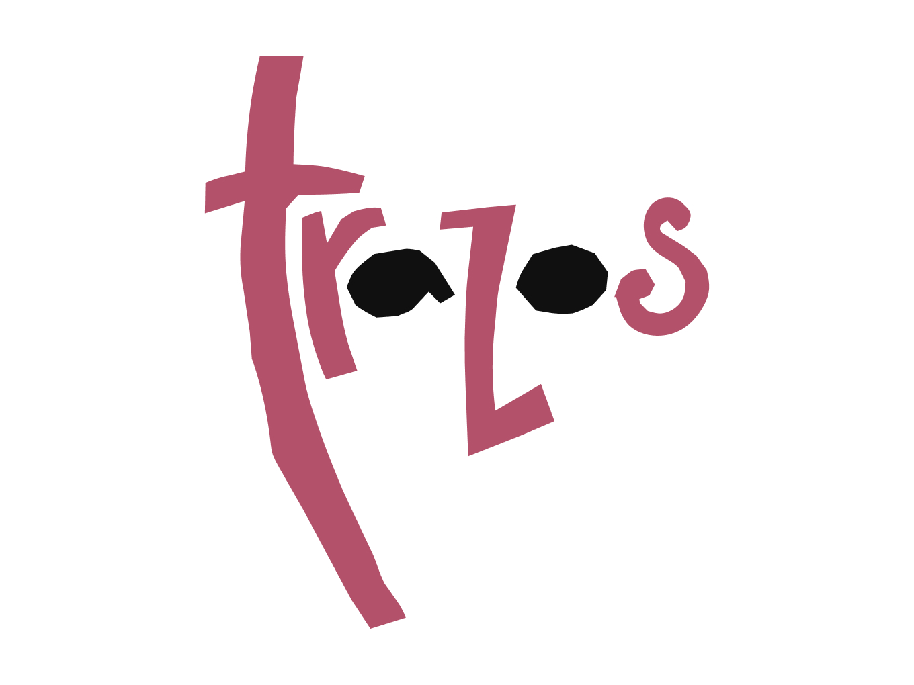

Trazos de Galicia
Imaxe principal da exposición e portada do catálogo Trazos de Galicia. Un percorrido pola historia do debuxo contemporáneo galego, organizada pola Deputación da Coruña en 2001.

Un proxecto en colaboración coa miña irmá Marigel, deseñadora e maquetadora da exposición. A miña achega foi a imaxe principal que protagonizou tanto a portada do catálogo como a propia mostra.
A exposición foi producida por Rey de Oros, en colaboración co museógrafo Pepe Barro, e reuniu a obra dos artistas plásticos contemporáneos máis relevantes de Galicia. Con carácter itinerante, recorreu concellos e salas da provincia de A Coruña e chegou tamén a Milán.